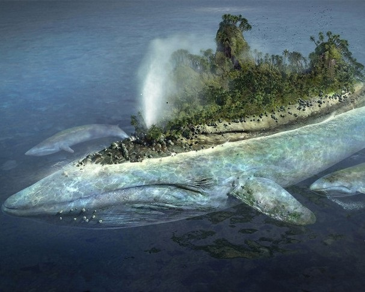
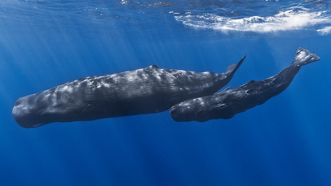
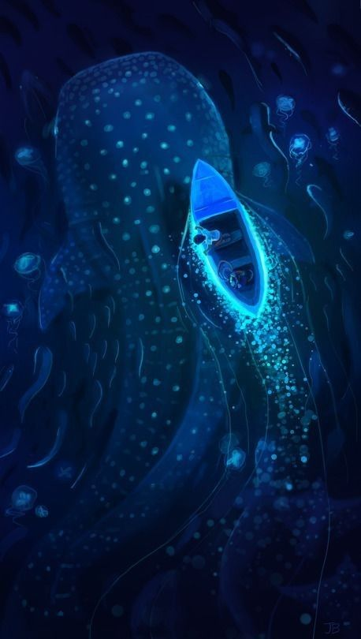
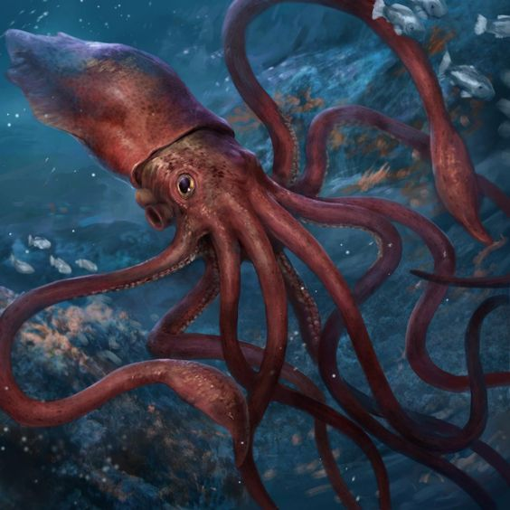
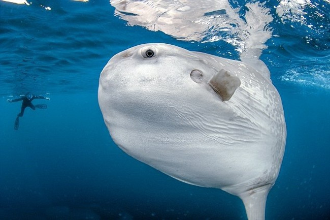

Cá voi xanh
 Cá voi xanh. Cá voi xanh (cá ông) sinh sống trong tất cả đại dương trên trái đất, tiến hoá từ động vật có vú sống trên đất liền, họ hàng gần nhất là hà mã. Chiều dài thân trung bình của chúng là 25 m (con đực) và 26,2 m (con cái). Con cá voi xanh dài nhất từng được phát hiện vào năm 1909, ở phía nam Đại Tây Dương. Chiều dài của nó là 33,58 m.Cá voi xanh nặng khoảng 150 tấn, thậm chí lên tới trên 400 tấn và có tuổi thọ trung bình từ 30 - 40 năm (cũng có thể lên tới 80 - 90 năm). Cá voi xanh không chỉ là loài động vật có vú lớn nhất, mà còn là động vật lớn nhất từng được biết đến.
Mặc dù cá voi xanh có kích thước khổng lồ, nhưng các nhà khoa học vẫn gặp khá nhiều khó khăn trong việc định vị và nghiên cứu những cá thể này trong đại dương bao la.
Thức ăn của cá voi xanh là sinh vật phù du (nhuyễn thể), tôm, tép tí hon, cá nhỏ và phân hải cẩu. Nhưng chủ yếu ăn krill - loài động vật phù du nhỏ thuộc nhóm giáp xác.
Mỗi con cá voi xanh ăn khoảng 5,5 tấn krill mỗi ngày. Do mỗi con krill chỉ nặng khoảng 1 gam nên mỗi ngày cá voi xanh phải nuốt 5,5 triệu con krill.
Cá nhà táng
 Cá nhà táng.Cá nhà táng là loài động vật có não lớn nhất hành tinh (nặng tới 8 kg, gấp 5 lần não người bình thường), đồng thời cũng vượt mọi loài khác về khả năng tạo ra tiếng ồn.
Chúng thuộc bộ cá voi, phân bộ cá voi có răng. Những con cá nhà táng đực trưởng thành, có chiều dài cơ thể lên tới 20,5 m. Thông thường, những con đực dài 18 m sẽ nặng 54 tấn, con cái dài 12 m sẽ nặng 17 tấn. Vì thế, cá nhà táng là loài động vật có răng lớn nhất hành tinh.
Cá nhà táng là động vật có vú lặn sâu nhất thế giới, tới 3 km, nín thở dưới nước trong thời gian khoảng 90 phút; là loài động vật ăn thịt to lớn nhất hành tinh. Tuy nhiên, loài vật này kém thông minh hơn cá heo và nhiều loài cá voi khác.
Con mồi chủ yếu của loài động vật này là mực, bao gồm cả mực khổng lồ và mực sống ở Nam Cực. Để bắt được con mồi ưa thích, cá nhà táng khổng lồ cần lặn xuống độ sâu 3 km để tìm và bắt mồi trước khi bơi lên mặt nước.
Cá nhám voi
 Cá mập voi( cá nhám voi).Cá mập voi (còn được gọi là cá nhám voi), đây là loài cá mập lớn nhất trên trên thế giới. Chiều dài của cá mập voi có thể lên tới 18,8 m, nặng tới 21,5 tấn.
Miệng của một con cá nhám voi rộng khoảng 1,5 m. Hàm của chúng có hơn 300 cái răng, nhưng có tác dụng như một máy lọc thức ăn, chúng không sử dụng những chiếc răng này để ăn.
Thức ăn của cá mập voi rất đa dạng và phong phú, tuy nhiên chúng chỉ ưa thích các sinh vật phù du. Chúng thường đập vây vào các rặng san hô, sau đó há chiếc miệng khổng lồ ra và húp trọn các loài sinh vật phù du này.
Mực ống khổng lồ
 HMực ống khổng lồ.Chúng ta biết rất ít về mực ống khổng lồ, bởi chúng sống dưới tầng nước sâu ở Thái Bình Dương và Đại Tây Dương.
Mực ống khổng lồ là loài thân mềm, có kích thước lớn và sở hữu đôi mắt "quá khổ" trong thế giới động vật (kích cỡ to bằng quả bóng rổ).
Mực ống khổng lồ có 8 tay và 2 xúc tu, dùng để bắt mồi. Đầu của nó lớn, hàm rất khỏe có hình dạng giống như mỏ của con vẹt.
Mực ống khổng lồ có thể đạt đến chiều dài 18 m và trọng lượng đến khoảng 1 tấn.
Kẻ thù "không đội trời chung" của mực ống khổng lồ đó là cá nhà táng.
Cá Mặt Trời
 Cá Mặt TrờiCá Mặt Trời trưởng thành có thể dài từ 3,5 - 5,5m, trọng lượng cơ thể khoảng 1,4 - 1,7 tấn. Đây là loài cá có khối lượng nặng nhất trong số những loài cá nhiều xương.
Cá mặt trời ở đại dương (tên khoa học là Mola mola) có nhiều đặc điểm kỳ lạ: Thân hình ngắn, trông gần giống với hình trái xoan hay hình tròn, nhìn từ xa trông giống cái đầu to, có những cái vây dài ngắn phía trên và phía dưới.
Cá mặt trời không có một cái đầu thực sự. Tuy to lớn, nhưng miệng chúng lại rất nhỏ, mỗi hàm có 2 răng dính nhau làm thành một cái mỏ. Với cái miệng đặc biệt như vậy nên chúng không thể nuốt mồi to, mà chỉ chuyên ăn giáp xác nhỏ và các phiêu sinh vật khác.
Cá Mặt Trời được coi là nhà vô địch về đẻ trứng trong thế giới đại dương, một con mái có thể đẻ khoảng 300 triệu trứng 1 lần...
Văn bản được soạn bởi Bích Phương · Hình ảnh và thông tinh từ nguồn wed.